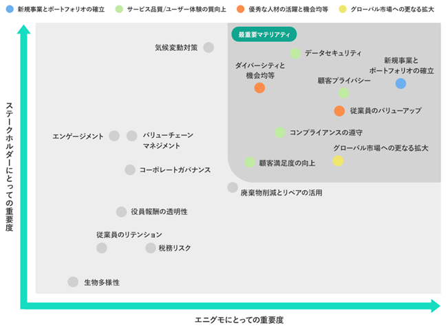
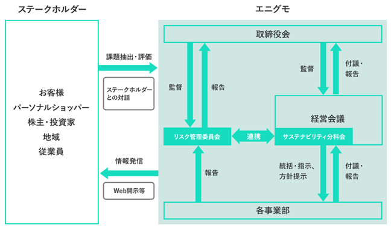

当社の経営方針、経営環境及び対処すべき課題等は、以下のとおりであります。
なお、文中の将来に関する事項は、当事業年度末現在において当社が判断したものであります。
（１）会社の経営の基本方針
当社は「世界を変える、新しい流れを。」というミッションの下、インターネットを通じて、法人・個人の垣根を壊し、誰もが多様な専門性を生かすことで今まで存在しなかった新しい価値を創造し、世界をよりよく変えることを目的とし、経営の基本方針として定め、企業価値並びに株主価値の増大を図ってまいります。
（２）目標とする経営指標
当社は継続的な事業拡大と企業価値向上のため、売上高及び営業利益を重要指標としております。
（３）経営環境及び中長期的な会社の経営戦略
国内の衣類・服装雑貨等市場（衣料品、靴、鞄、宝飾品、アクセサリー、子供服、スポーツ用品等が対象）は2022
年においては約11.8兆円であり、そのうちEC市場規模は2.5兆円、加えて生活雑貨、家具、インテリア市場は約8.0兆円であり、このうちEC市場規模は2.3兆円、と新型コロナウイルス感染症拡大前の市場規模に回復しつつあり、スマートフォン利用の浸透とアプリ機能の向上に加え、新型コロナウイルス感染症拡大を契機とした消費者のライフスタイルの変化が定着し、EC化率は着実に上昇してきております。（経済産業省：令和４年度 電子商取引に関する市場調査をもとに推計） このような市場環境の中、当社は、“Specialty” Marketplace（スペシャルティマーケットプレイス）「BUYMA」の運営を中心とした事業を展開しております。「BUYMA」サービス開始から当社グループが培ってきたソーシャルプラットフォームの運営ノウハウや、178カ国22万人超のパーソナルショッパーの方々と共に築いてきたネットワーク等の事業基盤にオウンドメディア、スタイリング及びリセール等を加え、ファッションアイテムとの出会いから処分までを一気通貫で提供するBUYMA経済圏を確立・拡大することで、サステナブルな社会を実現してまいります。また、国内外に展開するBUYMA事業を柱としつつ、新収益の柱となる“Specialty” Marketplaceを複数構築することを目指し、M&A・アライアンスも積極的に活用し、更なる事業の拡大を目指してまいります。
（４）優先的に対処すべき事業上及び財務上の課題
環境変化が著しいインターネット関連業界において、当社が優先的に対処すべき事業上及び財務上の課題は、以下の７点と認識しております。
① “Specialty” Marketplace（スペシャルティマーケットプレイス）「BUYMA」の継続的成長
② 知名度の向上
③ サイトの安全性強化
④ 取扱商品の拡充
⑤ 競合他社への対応
⑥ 優秀な人材の採用
⑦ 経営管理体制の強化
① “Specialty” Marketplace（スペシャルティマーケットプレイス）「BUYMA」の継続的成長
ファッションEC市場はEC化率の高まりに後押しされ、拡大を続けております。このような市場環境に身をおく当社は、市場における位置づけをより確立するべく、更なる事業拡大を図るとともに、ファッションを通じて皆様に常に新しい価値と楽しみを提案し続けることで、長期的な成長を実現してまいりたいと考えております。これらの具現化に向けて、“Specialty” Marketplace「BUYMA」の成長が当社の安定的・継続的な発展に必要不可欠と考えております。そのためには、サービスの知名度向上に加え、パーソナルショッパーによる安定的な商品供給体制、出品商品の信頼性確保及び更なるサイトのユーザビリティ向上が必須であると考えております。当社では、今後とも積極的な広告・広報活動を推進することにより「BUYMA」の認知度向上を目指していくと同時に、個人情報保護や知的財産権侵害品対策等によるサイトの信頼性・安全性強化、また、組織的な企画・開発体制により、グローバル展開や独自の経済圏確立を含む迅速なサービス向上及び拡大への取り組みを最重要課題として、「BUYMA」の発展に取り組んでいく方針です。
② 知名度の向上
当社は、当社が運営するサービスの飛躍的な成長にとって、“Specialty” Marketplace「BUYMA」の知名度の向上が必須であると考えております。また、大手企業との提携等も含めた事業展開をより有利に進めることや、サービスを支える優秀な人材を採用・確保するためには、「エニグモ」自体の知名度の向上も重要であると考えております。当社では今後、効率的且つ積極的な広報活動を推進することにより、サービス並びに当社自体の認知度向上を継続的に目指していく方針です。
③ サイトの安全性強化
インターネット上でのショッピングサイト・交流サイトの普及につれて、サイトの安全性維持に対する社会的要請は一層高まりを見せております。当社は、安心・安全な取引の場を提供する立場から、個人情報保護や知的財産権侵害品対策等も含めてサイトの安全性強化を最重要課題として、継続的に取り組んでいく方針です。
④ 取扱商品の拡充
“Specialty” Marketplaceとしての魅力を向上させ、更に多くのユーザーの多種多様な潜在需要に対応すべく、更なる出品者の積極的獲得を行い、これらの出品者に対してトレンド情報の発信を展開・促進することで、媒体全体の取扱商品の拡充を図ってまいります。
⑤ 競合他社への対応
ファッション市場においては競合他社も取り組みを強化しており、今後競争が一層厳しくなっていくと予想されますが、多様化する世界中のファッションアイテムから旬な商品を限りなくラインナップできる当社独自の強みとサービスの利便性を強化し、既存サービスの更なる成長を進めるとともに、これらの基盤を活かした新たなサービスの展開にも積極的に取り組んでまいります。
⑥ 優秀な人材の採用
グローバル展開を含めた今後の成長を推進するに当たり、VALUEを体現する優秀で熱意のある人材を適時に採用することが、重要な課題と認識しているため、従業員が高いモチベーションを持って働ける環境や仕組みの整備・運用を進めてまいります。
⑦ 経営管理体制の強化
当社は、市場動向、競合企業、顧客ニーズ等の変化に対して速やかに且つ柔軟に対応できる組織を運営するため、経営管理体制の更なる強化に努めてまいります。また、企業価値を継続的に向上させるため、内部統制の更なる強化、法令遵守の徹底に努めてまいります。
（注） VALUEとは当社の行動指針であり、以下の３つの要素を指します。
１．Self-Starter
２．Out-Performer
３．Team-Builder
当社のサステナビリティに関する考え方及び取組は、次のとおりです。
なお、文中の将来に関する事項は、当事業年度末現在において当社が判断したものです。
（１）サステナビリティに関する考え方
当社は個人をエンパワーメントすることで、個人の選択肢を拡げ多様な価値観が認められる社会を目指します。これを実行することにより、自国だけの価値観にとどまらない生き方や選択肢を生みだし、より豊かな人生を送れるように後押しをします。また、この目標を達成する課程において、グローバル市場で成長、繁栄するとともに、私たちが直面する気候変動等の社会課題の解決にも貢献します。
① マテリアリティ及び重点取組事項
2023年５月に当社は、国連の持続可能な開発目標（SDGs）等の目指すべき社会の実現に向け、社会と当社の持続的な発展と中長期的な企業価値に影響を与える重要な課題（マテリアリティ）及び４つの重点取組事項を特定しました。

|
重点取組事項 |
あるべき姿 |
KPI |
|
新規事業とポートフォリオの確立 |
・既存事業で安定した収益を上げ、新規事業に投資することで、既存事業以外からの収益が確立されている状態 |
2025年１月期までに「BUYMA」事業以外で売上高10億円以上を目指す |
|
サービス品質／ユーザー体験の質向上 |
・顧客が「BUYMA」サービスを不安なく継続して利用したいと思っている状態 ・顧客がセキュリティ面において不安を感じずに利用し続けられている状態 |
個人情報等の漏洩事故発生０件を継続する |
|
優秀な人材の活躍と機会均等 |
・各従業員が会社の成長に貢献し、個々人の能力を向上できている実感を持っている状態 ・従業員のみならず、「BUYMA」利用者においても多種多様な人材が活躍できる場を提供できている状態 |
― |
|
グローバル市場への更なる拡大 |
・海外向け事業からの収益を拡大し、国内市場に依存しない状態 |
2028年１月期までに海外向け売上高10億円を目指す（注） |
（注）海外向け売上高については、「GLOBAL BUYMA」における売上高及び今後の新規事業ないし買収先の企業における海外向け売上高を指します。
② ガバナンス
当社では、サステナビリティ（注）に関連する事項を討議するため、2023年５月、取締役会の監督下である経営会議の分科会として「サステナビリティ分科会」を設けました。
本分科会は、代表取締役（CEO）を議長とし経営会議参加メンバーの他にサステナビリティ推進担当及びCEOが必要と判断したメンバーで構成され、年に４回以上開催されます。
本分科会では、サステナビリティに関連する事項、具体的には、マテリアリティの特定／管理、サステナビリティ関連リスク・機会の特定／評価／管理及び関連方針の策定等につき討議が行われ、討議結果は遅滞なく取締役会に報告されます。
また、サステナビリティ分科会はリスク管理委員会と連携し、全社におけるリスク情報の共有やコンプライアンスの考え方や法令順守等、高い倫理観とコンプライアンス精神の浸透のための社員教育等も実施します。
（注）サステナビリティ：環境（気候変動）、社会、従業員、人権の尊重、腐敗防止、贈収賄防止、ガバナンス、サイバーセキュリティ、データセキュリティ、ビジネス環境など、企業経営の持続可能性に関連する事項を指します。

|
構成 |
議長：代表取締役 委員：経営会議参加メンバー、サステナビリティ推進担当 等 |
|
開催 |
年４回以上 |
|
討議内容 |
・マテリアリティの特定／管理 ・サステナビリティ関連リスク及び機会の特定／評価／管理 ・関連方針の策定 |
③ リスク管理
当社では、リスク管理規程に基づき適時に各部門よりリスク管理委員会にリスクの報告を行う仕組みをとっています。
また、サステナビリティに関連するリスク等はサステナビリティ分科会メンバーであるコーポレートオペレーション本部長よりリスク管理委員会にも共有され、全社リスクの特定に努めています。
これらの特定されたリスクは、リスク管理委員会及びサステナビリティ分科会を通じて、経営会議にて緊急度と影響度の観点よりリスク評価を行い、優先度順にレベル分けされ、度合いに応じて取締役会でも審議され、リスクを低減・受容・回避・移転するのか対応方法を判断します。
審議されたリスクの内容により全社リスクとして重要なリスクと位置づけられた場合は、リスク管理委員会やサステナビリティ分科会での管理のみならず、別途コミッティ等を設けて対策に当たる場合もあります。
（２）気候変動に関する開示
当社では気候変動をマテリアリティ特定に伴う重点取組事項として特定しておりませんが、企業行動憲章及び環境基本方針を掲げ、環境負荷低減に努めています。また、当社は2050年カーボンネットゼロを宣言し、GHG（温室効果ガス）排出量の削減に努めています。
詳細につきましては、当社HPのサステナビリティページを参照下さい。
https://enigmo.co.jp/sustainability
（３）人的資本・多様性に関する開示
① 基本方針
当社は、以下３つの価値基準を大切にし行動することで、ビジョンである「“Specialty” Marketplace」を追求し、ミッションの「世界を変える、新しい流れを。」の実現に挑戦していきます。
・セルフスターター
他人や環境に左右されず、自ら目標を見つけ引き金を引き、突き進める人
・アウトパフォーマー
自分の強みを鍛え、常識、限界、期待値を超えていく人
・チームビルダー
“日頃”のチーム作りと“実践時”のチームパフォーマンスに貢献できる人
② 戦略
ⅰ．人材育成方針
当社では、日々の業務や新しいサービスの開発に必要な技術的スキルはもちろん、ビジネススキルの習得や自己啓発のサポートを通じて、従業員一人ひとりのキャリア開発を後押しすることを方針として掲げています。また、入社間もない従業員にはコーポレートオペレーション本部より推奨研修プランを提示して受講してもらうなど、年次や期待されるポジションに応じ柔軟な対応を取っています。
ⅱ．社内環境整備方針
当社では、ミッションである「世界を変える、新しい流れを。」を達成するには、多様な人材の活躍が必要と考えています。そのため当社では、年齢・性別・国籍・障がいの有無にとらわれず、全ての従業員に応じた成長機会の提供、公正な賃金、リモートワークの推進や１on１ミーティングによるメンタリング制度の充実を図るなど、ダイバーシティが推進される土壌を醸成するように努めています。
３．指標と目標
指標：管理職における女性比率
目標：30％以上を継続維持
当事業年度の実績については、「
有価証券報告書に記載した事業の状況、経理の状況等に関する事項のうち、経営者が提出会社の財政状態、経営成績及びキャッシュ・フローの状況に重要な影響を与える可能性があると認識している主要なリスクは、以下のとおりであります。
また、リスク要因に該当しない事項についても、投資者の投資判断上重要であると考えられる事項については、投資者に対する積極的な情報開示の観点から以下に開示しております。当社はこれらのリスク発生の可能性を認識した上で、発生の回避及び発生した場合の対応に努める方針であります。なお、以下の記載のうち将来に関する事項は、別段の記載がない限り、本書提出日現在において当社が判断したものであり、不確実性を内在しているため、実際の結果と異なる可能性があります。
（１）インターネット関連市場について
現在、当社は“Specialty” Marketplace「BUYMA」の運営を主力事業としており、当社の事業の継続的な拡大発展のためには、更なるインターネット環境の整備、インターネットの利用拡大が必要と考えております。しかしながら、インターネットの環境整備やその利用に関する新たな規制の導入や技術革新等の要因により、今後のインターネットショッピングサイト運営の遂行が困難になった場合には、当社の事業及び業績に影響を及ぼす可能性があります。
なお、当社といたしましては、関連する動向を注視するとともに、状況に応じた取り組みを速やかに検討・実施することで当該リスクの低減に努めております。
（２）インターネット広告市場の推移について
当社の事業は、インターネット上で広告の配信などのオンラインマーケティング手法を提供するため、インターネット広告市場の拡大と普及に対して相関関係を有しております。近年インターネット広告市場は伸張しているものの、広告市場全般は景況に対して敏感に影響を受けることもあり、急激な景況の変化により、今後広告市場規模の成長が鈍化する可能性があります。また、昨今ではインターネット広告に関連する各デジタルプラットフォーム事業者において、データの取り扱いを見直す動きもあり、これらの景況及び動向変化がインターネット広告にも影響が及んだ場合、当社の業績に影響を及ぼす可能性があります。
なお、当社といたしましては、関連する動向を注視するとともに、状況に応じた取り組みを速やかに検討・実施することで当該リスクの低減に努めております。
（３）ビジネスモデルの変化について
当社が事業を展開するインターネット市場は、関連する技術及びビジネスモデルの変化が速く、スマートフォンやタブレット等を利用した新たなビジネスモデルが近年拡大しつつあります。そのため、変化に対応できず、既存サービス強化及び新サービス導入のために必要な新しい技術及びビジネスモデルを適時かつ効果的に採用もしくは応用できない場合、当社の業績に重要な影響を及ぼす可能性があります。
なお、当社といたしましては、インターネット事業者として、一定水準のサービスの提供を維持するためにも、技術革新及びビジネスモデルの変化に積極的かつ柔軟に対応していくことで当該リスクの低減に努めております。
（４）インターネット通信販売の法的規制について
当社の事業は「特定商取引に関する法律」、「取引デジタルプラットフォームを利用する消費者の利益の保護に関する法律」、「知的財産法」、「医薬品、医療機器等の品質、有効性及び安全性の確保等に関する法律」、「不当景品類及び不当表示防止法」、「古物営業法」、「旅行業法」、「電気通信事業法」、「個人情報保護法」等による法的規制を受けております。当社は、社内の管理体制の構築等によりこれら法令を遵守する体制を整備し、同時に個人を含む取引先に対しても契約内容にこれらの法令遵守を盛り込んでおりますが、これら法令に違反する行為が行われた場合若しくは、法令の改正又は新たな法令の制定が行われた場合には、当社の事業及び業績に影響を及ぼす可能性があります。
また、違法出品等が多数発生することによって社会問題等に発展する場合や社会環境の変化に伴い、インターネット上の取引そのものやサービスの運営を規制するような法律が制定される可能性があります。
そのため、これらの関係法令の制定・改正に対応が間に合わない場合には、当社の事業及び業績に影響を及ぼす可能性があります。
なお、当社といたしましては、関係法令に遵守したサイト運営に努め、制定・改正される法令に対応した事業展開を迅速かつ柔軟に行うことでリスクの低減に努めております。
（５）知的財産権について
当社は、運営するサイトの名称について商標登録を行っており、今後サイト上で新たなサービスの展開を行っていく際にも、関連する名称の商標登録を行っていく所存です。
一方、他社の著作権や肖像権を侵害しないようサイト上に掲載する画像等については十分な監視・管理を行っており、当社は第三者の知的財産権の侵害は存在していないと認識しておりますが、今後も知的財産権の侵害を理由とする訴訟やクレームが提起されないという保証はなく、そのような事態が発生した場合には、当社の事業及び業績に影響を及ぼす可能性があります。
なお、当社といたしましては、状況に応じた柔軟かつ迅速な対応を行うことでリスクの低減に努めております。
（６）個人情報の管理について
当社は運営する各サービスにおいて、会員等の個人情報につきまして、システム設計上での配慮は当然ながら、個人情報に関する社内でのアクセス権限の設定や外部データセンターでの厳重な情報管理等、管理画面及び物理的側面からもその取扱に注意を払っております。また、社内での個人情報保護に関する教育啓蒙を行っており、個人情報保護についての重要性の認識の醸成を行っております。なお、2009年７月に一般財団法人日本情報経済社会推進協会より、プライバシーマークの認定・付与を受けております。
しかしながら、近年では個人情報に関する規制動向も変化しており、当該動向に対応が間に合わない場合や、外部からの不正アクセスや想定していない事態によって個人情報の外部流出等が発生した場合には、当社の事業及び業績並びに企業としての社会的信用に影響を与える可能性があります。
なお、当社といたしましては、関係法令の動向に対応した事業展開を迅速に行うとともに、監視体制の構築や情報管理の見直し等を適宜行うことでリスクの低減に努めております。
（７）サイトの健全性の維持について
当社が提供する“Specialty” Marketplace「BUYMA」においては、不特定多数の会員が独自に商品を選定し出品、また同様に不特定の会員同士が独自にコミュニケーションを図って売買取引を行っており、これらに係る行為においては、他人の所有権、知的財産権、名誉、プライバシーその他の権利等の侵害及び関連法規への抵触が生じる危険性が存在しております。当社は、このような各種トラブルを未然に防ぐ努力として、禁止事項を利用規約に明記すると共に、利用規約の遵守状況を適宜モニタリングしており、サービスの健全性の維持に努めております。
しかしながら、サイト内における不適切行為の有無等を把握することができず、「BUYMA」内においてトラブルが発生した場合には、契約の内容にかかわらず、当社が法的責任を問われる可能性があります。また、当社の法的責任が問われない場合においても、トラブルの発生自体がサイトのブランドイメージ悪化を招き、当社の事業及び業績に重大な影響を及ぼす可能性があります。
なお、当社といたしましては、モニタリング方法及び内容等の見直しや利用規約における禁止事項の見直しを適宜行うことでリスクの低減に努めております。
（８）出品者と当社のサイト利用者とのトラブルが与える影響について
BUYMAの出品者とBUYMAを見て購入した会員との間にトラブルが発生し、ユーザーがその内容を連絡してきた場合、当社の担当者から当該出品者へ連絡して事実の確認とユーザーへの説明及びトラブルの原因となった事項の改善を求め、また、当社の判断によっては加盟契約の解除を行うなど対応しております。しかしながら、トラブルを経験したユーザーのすべてが納得するとは限らないため、当社のサービスに対する評判の低下、又は風評により業績に影響を与える可能性があります。
なお、当社といたしましては、類似するトラブルが発生するような場合には、規約等の見直しを含めた管理の強化及び出品者に対する啓蒙等を適宜行うとともに、当社にて速やかにトラブル解消に向けたサポートを行うことでリスクの低減に努めております。
（９）システムトラブルについて
当社はインターネットショッピングサイトの運営が主力事業であり、事業の安定的な運用のためのシステム強化及びセキュリティ対策を行っております。しかしながら、地震、火災などの自然災害、事故、停電など予期せぬ事象の発生によって、当社設備又は通信ネットワークに障害が発生した場合は当社の営業活動に重大な影響を及ぼす可能性があります。
また、当社若しくはインターネット・サービス・プロバイダーのサーバーが何らかの原因によって作動不能となったり、外部からの不正な手段によるサーバーへの侵入などの犯罪や役職員の過誤によるネットワーク障害が発生する可能性があります。これらの障害が発生した場合には、当社に直接的損害が生じるほか、当社に対する訴訟や損害賠償請求が生じるなど、当社の事業及び業績並びに企業としての社会的信用に影響を及ぼす可能性があります。
なお、当社といたしましては、サイバー攻撃及び障害の防止・検知のために監視運用の実施を行うとともに、各種トラブル発生時の体制構築を行うことでリスクの低減に努めております。
（10）不正利用に関するリスクについて
当社が提供する“Specialty” Marketplace「BUYMA」では、プラットフォーム上の取引においてクレジットカード決済による決済手段を提供しております。当社では、購入者による第三者のクレジットカード不正利用を防止するため、社内の担当部署による人的監視及びシステム監視を行うことで総合的にリスクを判定し不正利用を防止しております。
しかしながら、プラットフォーム上における不正利用を防止できなかった場合、不正利用に関するユーザへの補填、当社の信用の下落等による損害が発生し、万が一損害が拡大した場合、業績及び今後の事業展開に影響を及ぼす可能性があります。
（11）ソーシャルコマース事業への高い依存度及び今後の競合について
当社の収益は、現状、主に“Specialty” Marketplace「BUYMA」の運営による収入に依存しております。当社は、世界中の全ての個人と個性のエンパワーメントを企業価値と考え、CtoCを基本とした“Specialty” Marketplaceを運営するEC事業者として、商品流通の場の提供だけでなく、消費者及び出品者への情報発信を始めとする様々なサービスを提供することで、個人が持つ力を発揮できる環境の提供とその価値を最大化できるサービス運営を追求しております。この点において、当社はBtoCもしくはBtoBを基本とする他の一般的なファッションEC事業者とは一線を画しております。しかしながら、EC市場の拡大に伴い、他のアパレル商材のEC事業者のみならず、アパレルメーカー独自のインターネット通信販売の展開、その他新規参入事業者等により、新たな高付加価値サービスの提供等がなされた場合には、当社の競争力が低下する可能性もあります。また、これら競争の激化が、サービスの向上をはじめとした競合対策に伴うコスト増加要因となることで、当社の事業及び業績に影響を及ぼす可能性があります。
なお、当社といたしましては、既存事業の競合優位性強化を図るとともに、事業の多角化（M&Aや資本提携等）の検討・実施を行うことでリスクの低減に努めております。
（12）特定の業務委託先に対する依存度の高さについて
当社は、商品購入者に対する取引代金の回収業務について、特定のクレジットカード会社及び決済代行会社に委託しております。現在これらの業務委託先との間で問題は生じておりませんが、今後各社と当社の間における事業方針や戦略等の見直し、経営状況の変化や財務内容の悪化等により、提携関係や取引条件の変更等があった場合、当社の事業及び業績に影響を与える可能性があります。
なお、当社といたしましては、商品購入者における決済手段の多様化を図るに伴い、複数の委託先と提携を行うことでリスクの低減に努めております。
（13）業績の季節的変動について
当社の主力事業である“Specialty” Marketplace「BUYMA」の運営事業において、ファッション市場では、一般に季節変化に応じて単価の低い春夏物需要にあたる４月～８月にかけて、他の月に比べて売上が低くなる傾向があり、単価の高い秋冬物需要にあたる９月～１月にかけて、売上が高くなる傾向があります。そのため、該当期間における販売動向が当社の通期業績に重要な影響を与える可能性があります。
なお、当社といたしましては、当該期間に海外ブランドにて実施されるセール情報や各種の企画等により、取扱件数の向上を図り、また、取り扱い商品のカテゴリ拡充に向けた取り組みを図ることで年間を通じて安定した収益の確保に努める考えであります。
（14）為替の影響について
現状、当社の主力事業である“Specialty” Marketplace「BUYMA」は原則として取引は円建てで決済を行っております。そのため為替相場の変動による直接的な影響はございません。
しかしながら、「BUYMA」で販売される商品は各出品者が海外等で独自に買付け、個々に価格設定を行っているサービスモデルであるため、急激な為替相場の変動は商品価格に影響を与える可能性があり、当社の業績及び財務状況にも影響を及ぼす可能性があります。
なお、当社といたしましては、為替相場の変動を注視するとともに、出品者の属性や国・地域の多様化を図ることでリスクの低減に努めております。
（15）投融資・新規事業展開に伴うリスクについて
当社は、事業の拡大のために、国内海外を問わず、子会社設立、合弁事業の展開、買収等を行っていく可能性がありますが、これらの投融資は、現在の事業規模と比較して多額となる可能性があります。また、新規事業を開始する場合には、予期せぬ要因等により、計画どおりに事業が展開できない可能性もあり、これらの要因が生じた場合には、当社の事業及び業績に重要な影響を及ぼす可能性があります。また、投融資先の事業の状況が当社に与える影響や、新規事業が当社に与える影響を確実に予測することは困難であり、予期せぬ要因が発生した場合、投融資の回収ができず、当社の業績に重要な影響を及ぼす可能性があります。
なお、当社といたしましては、投融資先や新規事業の状況について定期的に情報連携・把握を行うことでリスクの低減に努めております。
（16）海外の事業展開におけるリスクについて
当社のビジネスモデルは、国内のみならず海外においてもサービスを展開しております。
今後、海外での事業展開が具体化したものの、その計画が予定どおりに進捗しなかった場合、当社の業績に重要な影響を及ぼす可能性があります。
なお、当社といたしましては、当該事業の進捗や課題の状況を定期的に把握・管理することでリスクの低減に努めております。
（17）消費者の消費動向について
当社の事業は、主にCtoCのEコマースを支援するサービスであるため、消費者の消費動向に対して相関関係を有しております。今後さらなる消費増税により、一般的には事前の駆け込み需要と事後の反動減があると言われており、これらの消費動向が当社の業績に短期的に影響を与える可能性があります。また、さらなる消費増税による個人消費支出の縮小により、国内景気が長期的に停滞することで国内Eコマース市場及びインターネット広告市場の成長が阻害された場合、当社の業績に重要な影響を及ぼす可能性があります。
なお、当社といたしましては、関連する動向を注視し、状況に応じた取り組みを柔軟かつ迅速に実施するとともに、事業の多角化（M&Aや資本提携等）の検討・実施を行うことでリスクの低減に努めております。
（18）人材の確保・育成について
当社の継続的な成長を実現させるためには、優秀な人材を十分に確保し育成することが重要な要素の一つであると認識しております。そのため、積極的な中途採用及び社内教育体制の構築を行う等、優秀な人材の獲得、育成及び活用に努めております。しかしながら、当社が求める優秀な人材を計画どおりに確保できなかった場合、当社の事業及び業績に影響を与える可能性があります。
なお、当社といたしましては、採用方法の拡充や組織制度の見直しを行うことでリスクの低減に努めております。
（19）小規模組織であることについて
当社の組織体制は小規模であり、内部管理体制もそれに準じたものとなっております。今後、事業の拡大とともに人員増強を図るとともに人材育成に注力し、内部管理体制の一層の強化、充実を図っていく方針ではありますが、これらの施策が適時適切に行えなかった場合には、当社の事業及び業績に影響を与える可能性があります。
（20）ソニーグループ株式会社との関係について
2024年１月末現在、当社は、ソニーグループ株式会社の持分法適用会社であり、ソニーグループ株式会社は、当社株式の25.2％（潜在株式を含む）を保有するその他の関係会社に該当しておりますが、当社の方針・政策決定及び事業展開については、独自の意思決定によって進めております。また、当社は、主にCtoC（一般消費者間で行われる取引）型のソーシャル・ショッピング・サイト事業を展開する企業でありますが、ソニーグループ株式会社内での競合関係は生じていないと認識しております。
１．人的関係について
2024年１月末現在、ソニーグループ株式会社より社外取締役１名を招聘しております。業務・管理両面から経営体制の強化を図る目的で、広い視野と経験に基づいた経営全般の提言を得ることを目的としているものであります。なお、当社と同取締役との取引関係はございません。
２．取引関係
当事業年度において、当社とソニーグループ株式会社との間に重要な取引関係はございません。
ソニーグループ株式会社は、今後も当社株式を安定保有する意向を有しており、当社と同社との関係について重大な変化は生じないものと考えております。
しかしながら、将来において何らかの要因により、同社グループが経営方針や営業戦略等（当社株式の保有方針等を含む）を変更した場合、当社の事業展開及び業績に何らかの影響を及ぼす可能性があります。
なお、当社といたしましては、定期的な情報連携を行うことでリスクの低減に努めております。
（21）風評リスク
当社に対する風評が、マスコミ報道やインターネットの掲示板への書き込み等により流布した場合に、お客さまや投資家の理解・認識に影響を及ぼすことにより、当社の社会的信頼・信用が毀損される可能性があります。当社では、風評に適時適切に対応することで、影響の極小化を図るよう努めておりますが、悪質な風評が流布した場合には、当社の業績や財政状態等に影響を及ぼす可能性があります。
なお、当社といたしましては、当該動向に対して情報収集を行うとともに、状況に合わせた対応を行うことでリスクの低減に努めております。
（22）感染症のリスクと対策
新型コロナウイルス感染症のような大規模な感染症等の発生による従業員等の感染等に伴って、サービスの提供が困難になることがあります。
なお、新型コロナウイルス感染症に関しては、ワクチン接種の普及やウイルス変異による重症化リスクの減少等によりその影響は軽減されており、今後については社会経済活動の正常化が進むことが見込まれていますが、感染収束の動向や、経済情勢に与える影響の度合いによっては、当社の事業展開及び業績に影響を与える可能性があります。
当社といたしましては、今後も当該感染症に関する影響を継続的に注視するとともに、引き続き民間の物流会社との提携や国内外の法人出品者による出品拡充に向けた取り組みを行う等、状況に応じた取り組みを迅速に展開することでリスクの低減に努めております。
（23）リモートワーク等の働き方見直しに伴うリスクと対策
当社では、新型コロナウイルス感染症の発生に伴い、2020年3月からリモートワークを基本とする働き方に転換しており、今後もリモートワークを基本とした働き方を推進していくこととしております。
そのため、役職員の多くが異なる環境下において業務を行い、同一の場所で業務を行う体制とは異なる働き方となることから、働き方の見直しに合わせた社内情報管理に関するセキュリティ対策、各業務のオペレーションや労務管理に関する見直し等を行うことが必要となりますが、外部からの不正な手段によるアクセスなどの犯罪や役職員の過誤による漏洩、障害や業務遂行上のトラブル等が発生した場合、当社の事業及び業績に影響を与える可能性があります。
なお、当社といたしましては、関係部門におけるシステム管理や業務体制及びマネジメント体制の見直しを行うことでリスクの低減に努めております。
１．業績等の概要
（１）業績
当社は「世界を変える、新しい流れを。」というミッションの下、インターネットを通じて、法人・個人の垣根を壊し、誰もが多様な専門性を生かすことで今まで存在しなかった新しい価値を創造する、“Specialty” Marketplace（スペシャルティマーケットプレイス）「BUYMA（バイマ）」を中心とした事業を展開しております。
当事業年度（2023年２月１日～2024年１月31日）における世界経済は、緩やかな持ち直しの兆しがみられるものの、世界的な金融引き締めが進み、高止まりするインフレの影響等により、下振れリスクを伴った不透明な状況が続いております。日本経済においては、新型コロナウイルス感染症の５類移行に伴う経済活動の正常化が進み、個人投資や設備投資等の緩やかな回復に加え、インバウンド需要の増加もみられたものの、長引くロシア・ウクライナ戦争に続くイスラエル・ハマス紛争の影響による原油価格の高騰と、止まらない円安を背景とした物価と金利の上昇に加え、経済を支えるサプライチェーンにも混乱が続く等、多様化する地政学的リスクへの対応は企業収益を圧迫しております。
このような環境の中、当社は基幹事業である“Specialty” Marketplace「BUYMA」において、BUYMAが提供するSpecialtyの本質的強化に向けた中長期的な取り組みを積極的に進めております。良質な認知獲得と顧客体験の質向上に向け、継続的な各機能向上施策に加え、一層安全かつ満足度の高い購入体験をBUYMAでお楽しみいただけるよう、サービスを拡充してきております。
当事業年度におけるグローバルファッションEC市場は、リアル店舗への客足回帰に加え、為替影響と海外でのインフレによる物価上昇の影響を受け厳しい状況が続いており、BUYMAにおいても異常気象の影響により秋冬物需要期が大幅に減少し、当事業年度の総取扱高は苦戦を強いられたものの、BUYMAイベントスペース「BUYMA studio」とパーソナルショッパーによる企画イベントの強化、Chat GPTを利用した「AIでさがす」や「あんしんナビ」の導入による利便性の向上、外部機関との連携による安心・安全訴求の体制強化、BUYMA独自のセール実施、韓国ファッションを主とした海外法人の出品力強化、ロイヤルカスタマー向けのコンシェルジュサービス対象者拡大等、中長期的な成長に不可欠な施策を順次進めており、オウンドメディアであるSTYLE HAUS（スタイルハウス）やデジタルメディア（YouTube、Instagram、X（旧Twitter）等）と連動企画の展開等による良質な認知の獲得も進めてきております。GLOBAL BUYMAにおいては、専属出品者の増強、Connected TV広告及びSEO強化施策による流入増に加え、キャンセル率低減施策等によるCVR（取引成約率：取引注文数に対する取引成約数の割合）上昇を着実に進めてきております。更に、BUYMA TRAVELにおいては、海外旅行需要の回復を追い風に成長を加速しており、持分法適用関連会社である株式会社MEGURUが運営する「Hello Activity」との連携も開始し、第２第３の柱の成長に向けて積極的に戦略を進めております。また、利益面では、前事業年度以降の数年は、確かな価値に基づく高い成長を目指すための転換点と位置づけ、当社の強みである強固な財務基盤と安定した収益基盤を生かし、営業利益は黒字を前提として、短期的には減益を許容し、さまざまな投資を事業環境や事業進捗に応じ、機動的かつ柔軟に実行していく方針としており、当該方針に基づくヒトとモノの両面からの投資強化を継続的かつ戦略的に進めていることから、減益となりました。
以上の結果、会員数は11,296,087人（前期比6.7％増）、商品総取扱高は57,825,210千円（前期比8.6％減）となり、当事業年度における当社の売上高は6,203,762千円（前期比9.7％減）、営業利益は999,507千円（前期比12.1％減）、経常利益は1,019,753千円（前期比10.8％減）、当期純利益は838,365千円（前期比17.7％増）となりました。
なお、当社の事業セグメントはソーシャルコマース事業の単一セグメントでありますので、セグメント別の記載は省略しております。
（２）キャッシュ・フローの状況
当事業年度における現金及び現金同等物（以下「資金」という。）の残高は10,529,231千円となりました。当事業年度における各キャッシュ・フローの状況は以下のとおりであります。
（営業活動によるキャッシュ・フロー）
当事業年度において営業活動により得られた資金は1,707,735千円（前期は322,765千円の使用）となりました。
この主な増加要因は、税金等調整前当期純利益1,154,404千円等によるものであります。
（投資活動によるキャッシュ・フロー）
当事業年度において投資活動により使用した資金は1,014,691千円（前期は785,261千円の使用）となりました。
この主な減少要因は、投資有価証券の取得による支出744,265千円等によるものであります。
（財務活動によるキャッシュ・フロー）
当事業年度において財務活動により使用した資金は480,575千円（前期は1,422,185千円の使用）となりました。
この主な減少要因は、自己株式の取得による支出82,444千円及び配当金の支払額による支出398,130千円等によるものであります。
２．生産、受注及び販売の実績
当社は、ソーシャルコマース事業の単一セグメントであるため、セグメント別の記載を省略しております。なお、当事業年度の販売実績を示すと、次のとおりであります。
|
事業部 |
売上高（千円） |
前期比（％） |
|
ソーシャルコマース事業 |
6,203,762 |
90.3 |
|
合計 |
6,203,762 |
90.3 |
（注）最近２事業年度における販売先については、いずれも販売実績が総販売実績の100分の10未満のため、記載を省略しております。
３．財政状態、経営成績及びキャッシュ・フローの状況の分析
当社の財政状態、経営成績及びキャッシュ・フローの状況の分析は、以下のとおりであります。
なお、文中の将来に関する事項は、本書提出日現在において判断したものであります。
（１）重要な会計方針及び見積り
当社の財務諸表は、我が国において一般に公正妥当と認められている会計基準に基づき作成されております。この財務諸表の作成にあたって、経営者による会計方針の選択・適用、資産・負債及び収益・費用の報告金額並びに開示に影響を与える見積りを必要とします。経営者は、これらの見積りについて過去の実績や現状等を勘案し合理的に判断していますが、実際の結果は、見積り特有の不確実性があるため、これらの見積りと異なる場合があります。
当社の財務諸表で採用する重要な会計方針は、後記「第５ 経理の状況 １ 財務諸表等(1）財務諸表 注記事項 重要な会計方針」に記載しております。
（２）財政状態の分析
（資産）
当事業年度における資産合計は13,225,199千円（前期比4.3％増）となりました。
流動資産は11,270,646千円（前期比3.4％減）となりました。この主な要因は、現金及び預金が413,594千円増加した一方で、預け金が491,831千円、未収還付法人税等が142,145千円、未収消費税等が89,279千円減少したことによるものであります。
固定資産は1,954,553千円（前期比91.7％増）となりました。この主な要因は、投資有価証券が759,887千円増加したことによるものであります。
（負債）
当事業年度における負債合計は2,699,285千円（前期比6.3％増）となりました。
流動負債は2,690,842千円（前期比6.3％増）となりました。この主な要因は、未払法人税等が193,712千円増加した一方で、未払金が72,250千円減少したことによるものであります。
固定負債は8,443千円（前期比1.1％増）となりました。この要因は、資産除去債務の増加93千円によるものであります。
（純資産）
当事業年度における純資産は10,525,913千円（前期比3.7％増）となりました。この主な要因は、当期純利益838,365千円の計上による増加と剰余金の配当398,130千円による減少であります。
（３）経営成績の分析
（売上高）
当社は基幹事業である“Specialty” Marketplace「BUYMA」において、BUYMAが提供するSpecialtyの本質的強化に向けた中長期的な取り組みを積極的に進めております。良質な認知獲得と顧客体験の質向上に向け、継続的な各機能向上施策に加え、一層安全かつ満足度の高い購入体験をBUYMAでお楽しみいただけるよう、サービスを拡充してきております。
当事業年度におけるグローバルファッションEC市場は、リアル店舗への客足回帰に加え、為替影響と海外でのインフレによる物価上昇の影響を受け厳しい状況が続いており、BUYMAにおいても異常気象の影響により秋冬物需要期が大幅に減少し、当事業年度の総取扱高は苦戦を強いられたものの、BUYMAイベントスペース「BUYMA studio」とパーソナルショッパーによる企画イベントの強化、Chat GPTを利用した「AIでさがす」や「あんしんナビ」の導入による利便性の向上、外部機関との連携による安心・安全訴求の体制強化、BUYMA独自のセール実施、韓国ファッションを主とした海外法人の出品力強化、ロイヤルカスタマー向けのコンシェルジュサービス対象者拡大等、中長期的な成長に不可欠な施策を順次進めており、オウンドメディアであるSTYLE HAUS（スタイルハウス）やデジタルメディア（YouTube、Instagram、X（旧Twitter）等）と連動企画の展開等による良質な認知の獲得も進めてきております。GLOBAL BUYMAにおいては、専属出品者の増強、Connected TV広告及びSEO強化施策による流入増に加え、キャンセル率低減施策等によるCVR（取引成約率：取引注文数に対する取引成約数の割合）上昇を着実に進めてきております。更に、BUYMA TRAVELにおいては、海外旅行需要の回復を追い風に成長を加速しており、持分法適用関連会社である株式会社MEGURUが運営する「Hello Activity」との連携も開始し、第２第３の柱の成長に向けて積極的に戦略を進めております。
以上の結果、会員数は11,296,087人（前期比6.7％増）、商品総取扱高は57,825,210千円（前期比8.6％減）となり、当事業年度における当社の売上高は6,203,762千円（前期比9.7％減）となりました。
（売上原価）
当事業年度における売上原価は1,341,601千円（前期は1,416,916千円）となりました。これは主として、商品購入者に対する取引代金の回収業務委託先へ支払う決済手数料となります。
（販売費及び一般管理費、営業利益）
当事業年度における販売費及び一般管理費は、3,862,653千円（前期は4,315,079千円）となりました。これは主として、広告宣伝費、業務委託費及び人件費となります。
以上の結果、当事業年度における営業利益は、999,507千円（前期は1,136,808千円）となりました。
（営業外収益、営業外費用及び経常利益）
当事業年度における営業外収益は、33,411千円（前期は16,250千円）となりました。これは主として、未払成約代金受入益及び助成金収入となります。
一方、営業外費用は、13,164千円（前期は9,967千円）となりました。これは主として、為替差損及び投資事業組合運用損となります。
以上の結果、当事業年度における経常利益は、1,019,753千円（前期は1,143,091千円）となりました。
（特別利益、特別損失及び当期純利益）
当事業年度における特別利益は、135,042千円（前期は4,084千円）となりました。これは主として、投資有価証券売却益となります。
一方、特別損失は、391千円（前期は153,310千円）となりました。これは主として、商品評価損となります。
以上の結果、税引前当期純利益は1,154,404千円（前期は993,865千円）となりました。
また、法人税、住民税及び事業税（法人税等調整額を含む）は、316,038千円（前期は281,291千円）であります。
以上の結果、当事業年度における当期純利益は838,365千円（前期は712,574千円）となりました。
（４）キャッシュ・フローの分析
「１.業績等の概要(2）キャッシュ・フローの状況」に記載しております。
（５）経営戦略の現状と見通し
（次期の見通し）
今後の我が国経済は、緩やかな回復が見込まれているものの、中国での不動産不況の長期化、国際情勢に起因するエネルギー資源や原材料の高騰と、欧米での利下げ開始時期の遅れによる消費減速、日銀の金融政策変更による為替変動等が内外経済の下振れ材料となっており、引き続き先行き不透明な状況で推移すると予測しております。
このような環境と経済状況が急激に変化を繰り返す中で、当社は、利益額の達成を優先目標とした数年単位での中期計画は本質的な企業価値向上を目指すには不向きであると判断し、短期的な売上や利益目標を最優先とした視点から離れ、長期の視点で経営を改めて進めるため、当社が創業時から実現を目指してきた信念（パーパス）である「世界を変える、新しい流れを。」をより強く意識するとともに、これを基軸においた長期的な企業価値の創造と向上のための投資を、短期的な利益成長を追わずに直近数年をかけて行うことで、一過性ではなく、時代を超えて価値を提供する会社を目指す方針としております。
当社は、確かな価値に基づく高い成長の実現のため、当社の強みである強固な財務基盤と安定した収益基盤を生かし、複数の事業を運営するエニグモグループの形成と、2027年１月期の売上高100億円達成をターゲットとする中期目標を設定しました。既存事業の経営効率を高めることで一定の営業利益規模を確保しつつ、中期目標達成に向け新収益の柱を複数構築すべく、長期視点での投資を事業環境や事業進捗に応じ機動的かつ柔軟に実行してまいります。
以上の方針から、2025年１月期における業績予想につきましては、売上高・営業利益については増収・増益を見込んでおりますが、具体的な予想数値は合理的に算定することが困難であるため、非開示とさせていただきます。
基幹事業である国内外の「BUYMA」を柱としつつ、新収益の柱となる“Specialty” Marketplace を複数構築するべく、新領域でも企業価値の向上に寄与できるよう、営業収益を再投資に継続的かつ戦略的に投下し、長期視点で企業価値の向上から売上高の成長加速へと繋げていくことを実現してまいります。
（６）経営成績に重要な影響を与える要因について
「第２ 事業の状況 ３．事業等のリスク」に記載のとおりであります。
（７）経営者の問題認識と今後の方針について
「第２ 事業の状況 １．経営方針、経営環境及び対処すべき課題等」に記載のとおりであります。
該当事項はありません。
特記すべき事項はありません。